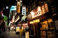
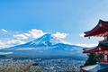
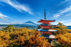
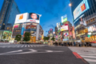
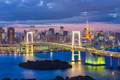
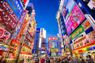
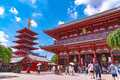

Multimédia
Nesta página encontra conteúdo multimédia sobre Tóquio.
Fotografias








Vídeo
Poesia
Tóquio
Entre néons e templos antigos,
a cidade respira em dois mundos.
Silêncio de jardins secretos,
ruído das ruas que nunca dormem.
No reflexo das luzes,
cada passo é um instante eterno.
Tóquio — onde o presente
se encontra com a eternidade.